Kakogawa, Hyogo: things to do, food and stays
Kakogawa · Hyogo
Kakogawa
Highlighted on the Hyogo map.
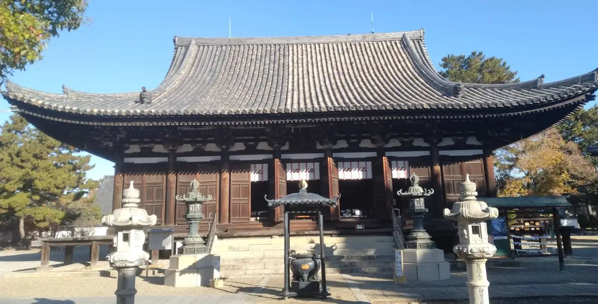
Stay
たびのホテル加古川別府駅前
Tabino Hotel Kakogawa Beppu Ekimae
Hotel in Beppu, Kakogawa with a large communal bath and long stays; 1-minute walk from Beppu Station.
加古川プラザホテル
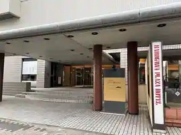
Kakogawa Plaza Hotel
Hotel in Kakogawa with breakfast available and business travelers; 5-minute walk from Jrkakogawa Station.
スーパーホテル加古川駅前
Super Hotel Kakogawa Ekimae
Hotel in Kakogawa with buffet meals and breakfast available.
ホテルアゼリア加古川
Hotel Azeria Kakogawa
Hotel in Kakogawa with breakfast available.
ＮＫホテル加古川
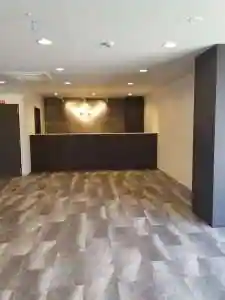
NK Hotel Kakogawa
Hotel in Onoe, Kakogawa with breakfast available and parking.
ビジネスイン東和
Business Inn Towa
Inn in Hiraoka, Kakogawa with business travelers and long stays.
Dining
大浦ミートゲストハウス
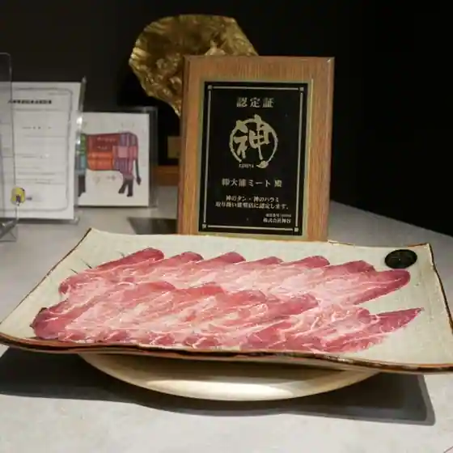
Ora Mito Guesthouse
利心
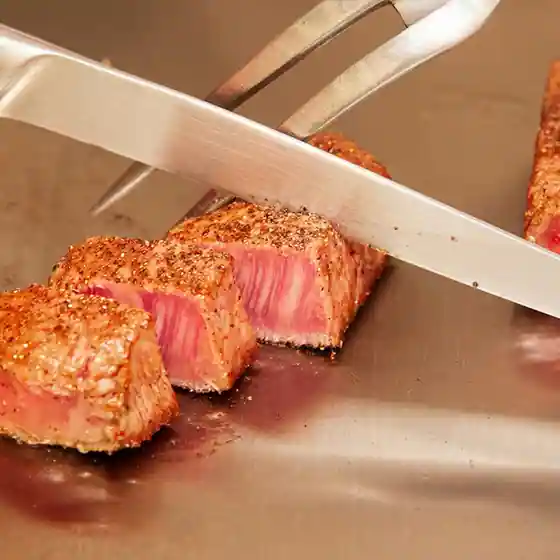
Togokoro
もんど
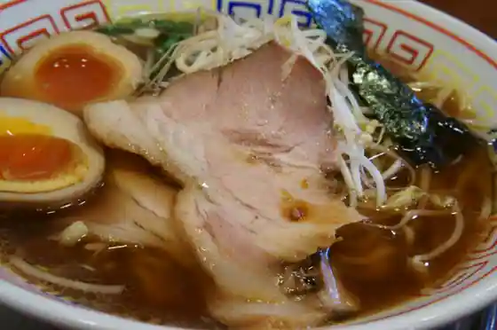
Mondo
鯛焼工房 やきやきや
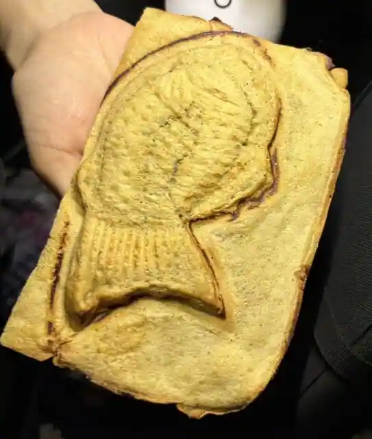
Taiyaki Kobo Yakiyakiya
Coffee House Rocky
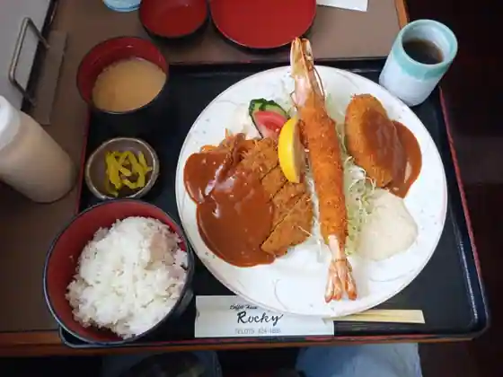
Coffee House Rocky
二代目おかだラーメン
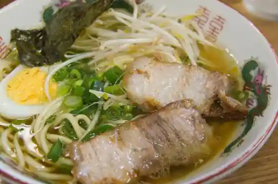
Nidaime Okada Ramen
ビストロ・エピ
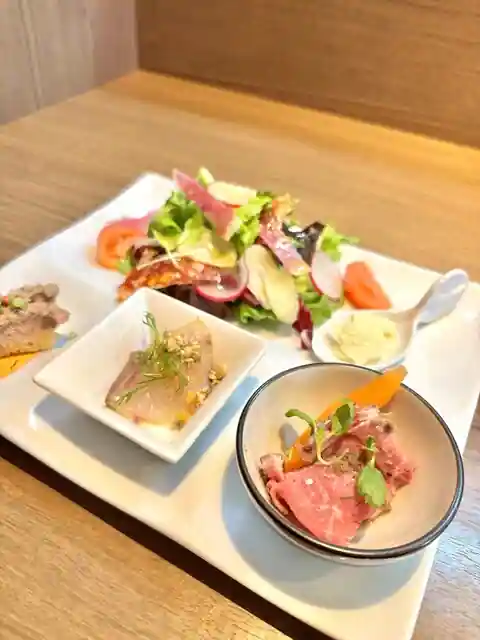
Bistro Epi
本家かつめし亭
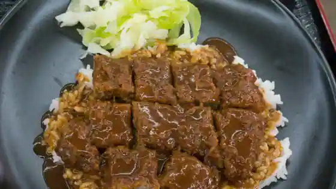
Honke Katsumeshi Tei
とんこつラーメン 鷹多花
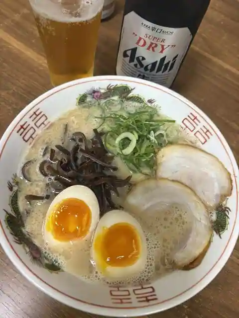
Tonkotsu Ramen Taka Taka
炭火焼きハンバーグ＆ステーキ アトム
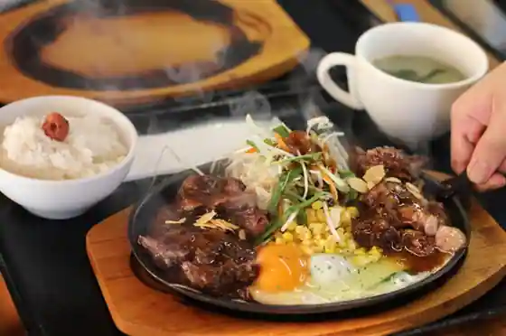
Sumibi Yaki Hamburg & Steak Atomu
大和
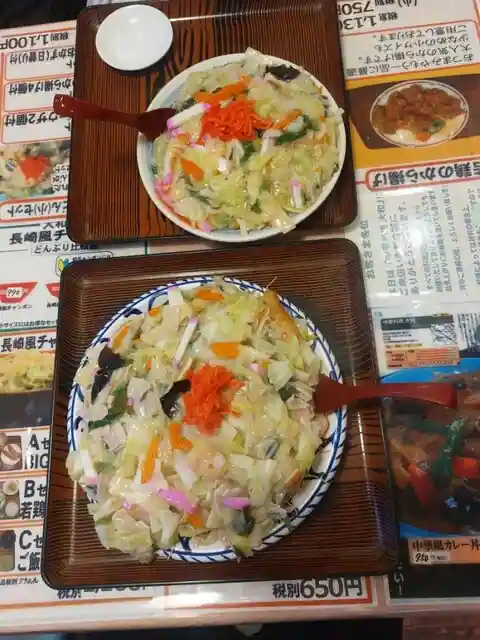
Yamato
千成亭
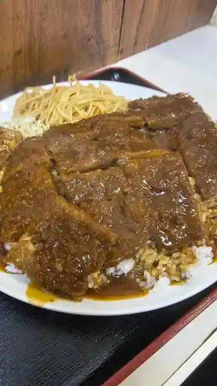
Sennari Tei
肉そば麺達
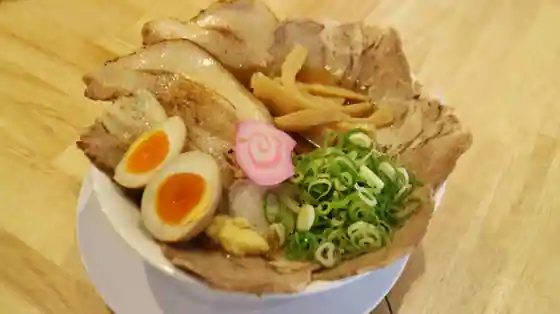
Niku Soba Men Toru
まるみ
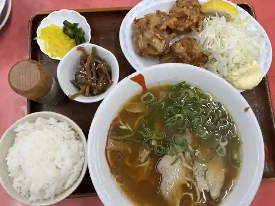
Marumi
ラーメン屋 ひまわり
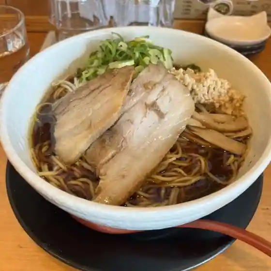
Ramen Ya Himawari
ROOM2 COFFEE&ROASTER
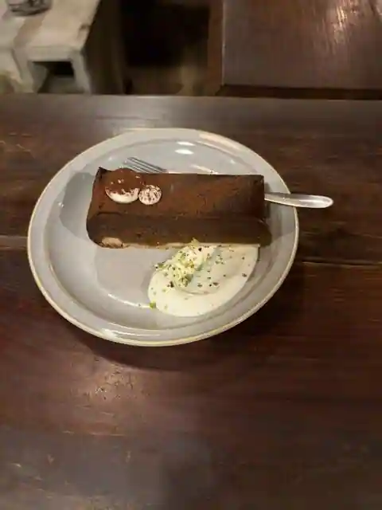
ROOM2 COFFEE&ROASTER
リーテンコーヒー
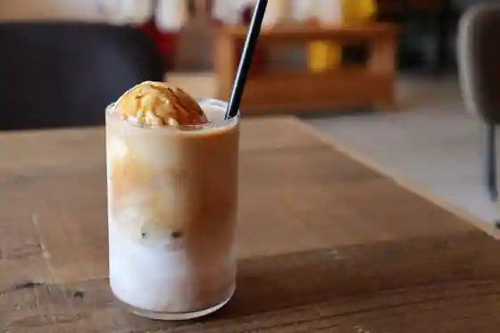
Riten Coffee
石焼オムライスダイニング クローバーキッチン
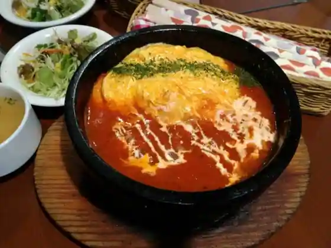
Ishiyaki Omuraisu Dining Kuro Bar Kitchen
龍
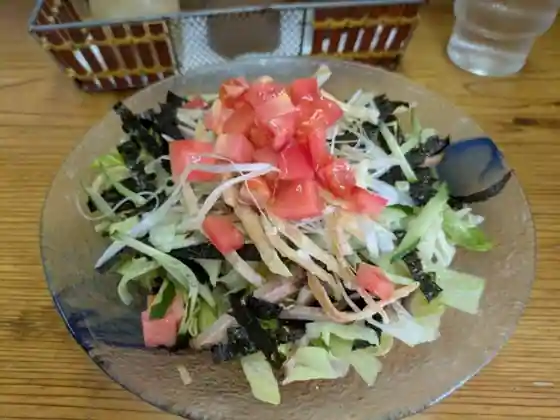
Ryu
彦
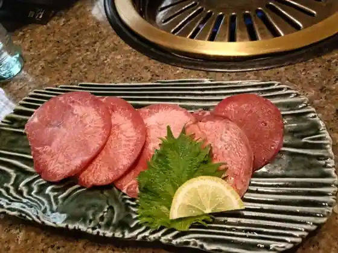
Hiko
空箱
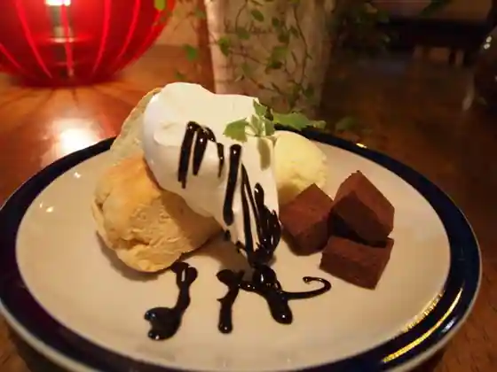
Karabako
讃岐うどん さくらや
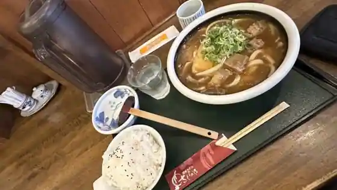
Sanuki Udon Sakuraya
博多ラーメン片岡屋 加古川店
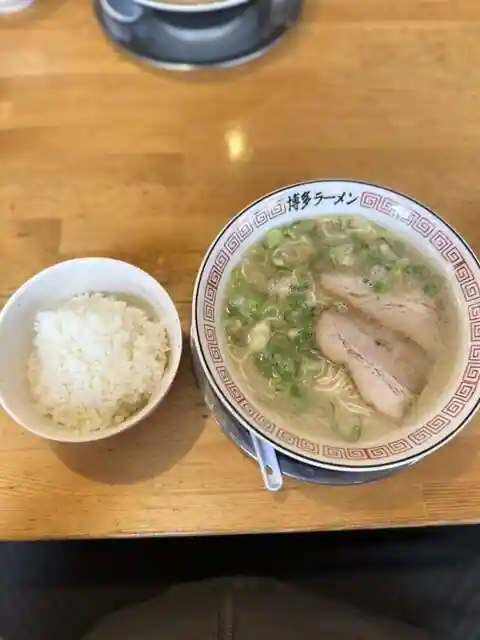
Hakata Ramen Kataoka Ya Kakogawa
辨慶
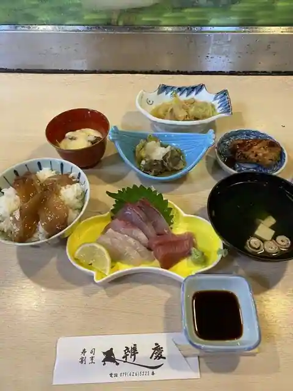
Benkei
Sights
Katana Tayama Kakurin Tera